lorenz_partial_25d_additive_mse_uniform_p30_obsnoise001__nolpl_lc_sweepProject: Lorenz_INDpartial_N25_D1_NormTrue_T3__JacobianODE
Launched: 2026-04-17T21:05:44Z
Completed: 2026-04-18T10:45:23Z
Outcome: complete_clean
Git: latent-JacobianODE @ 5051646
Expected runs: 8
lorenz_partial_25d_additive_mse_uniform_p30_obsnoise001__nolpl_lc_sweepDescription
Same base as lorenz_partial_25d_additive_mse_uniform_p30 with obs_noise=0.01 and training.lightning.latent_prediction_loss_weight fixed at 0. Single axis: 9-value loop_closure_weight grid (9 runs). Direct comparison to lorenz_partial_25d_additive_mse_uniform_p30_obsnoise001__lc_sweep, differing only in LPL.
Hypothesis
For an invertible coupling-flow encoder the decoded-space losses (reconstruction + loop closure) equal geodesic-distance losses in the latent under the pullback metric g = J_D^T J_D, while latent- space MSE does not respect that metric. If that geometric argument is right, dropping LPL should not hurt — and may help — val traj_loss and λ accuracy, because it removes a mis-scaled term from the gradient. If LPL=0 performs materially worse than LPL=1 at the best LC, then LPL provides a training-signal benefit that the geometry analysis misses (e.g. conditioning, direct gradients onto the dynamics net) and we should keep it.
Success criteria
Swept axes (1): training.lightning.loop_closure_weight
Chosen run (by best_traj_loss): opmdjlmu — traj_loss=0.00116, MASE=0.6856, R²=0.9969, LC loss=1.494, epoch=145.0
Swept-axis values at chosen run: training.lightning.loop_closure_weight=1.0e-06
Runs analyzed: 8 (expected 8)
| run_idx | run_id | training.lightning.loop_closure_weight |
best_traj_loss | best_MASE | R² | LC loss | epoch |
|---|---|---|---|---|---|---|---|
| 1 | opmdjlmu |
1.0e-06 | 0.00116 | 0.6856 | 0.9969 | 1.494 | 145.0 |
| 0 | 092g9dhl |
0 | 0.00132 | 0.7235 | 0.9965 | 3.828 | 96.0 |
| 2 | kfn859xs |
1.0e-05 | 0.00143 | 0.7388 | 0.9962 | 0.476 | 99.0 |
| 3 | 4tfmicbv |
1.0e-04 | 0.00154 | 0.7473 | 0.9959 | 0.068 | 104.0 |
| 4 | g6w8e9tz |
0.001 | 0.00185 | 0.8191 | 0.9950 | 0.009 | 115.0 |
| 5 | vhaz6ufh |
0.01 | 0.00270 | 0.9538 | 0.9927 | 0.004 | 101.0 |
| 6 | i22vgice |
0.1 | 0.00451 | 1.2270 | 0.9878 | 0.000 | 90.0 |
| 7 | uue09sft |
1 | 0.00529 | 1.3987 | 0.9858 | 0.000 | 131.0 |
| Criterion | Verdict | Note |
|---|---|---|
| Val traj_loss at best LC is no worse than 1.5× the LPL=1 baseline (obsnoise001__lc_sweep, best LC run) | Unknown | |
| Loop closure and λ estimates are not qualitatively worse than the LPL=1 baseline | Unknown | |
| Any differences are consistent across the LC axis (not just at one cell) | Unknown |
Automated verdicts use simple numeric-threshold parsing and may mis-classify qualitative criteria. The Discussion section below takes precedence.
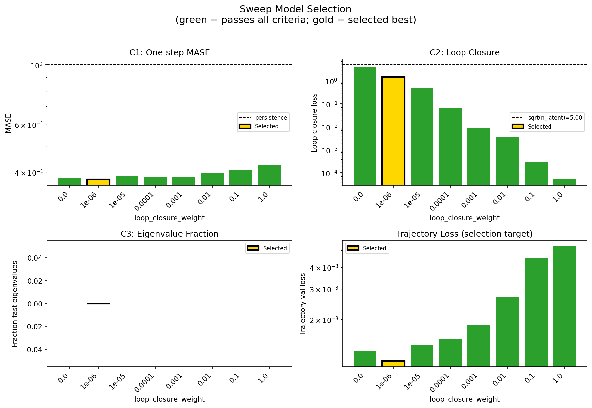
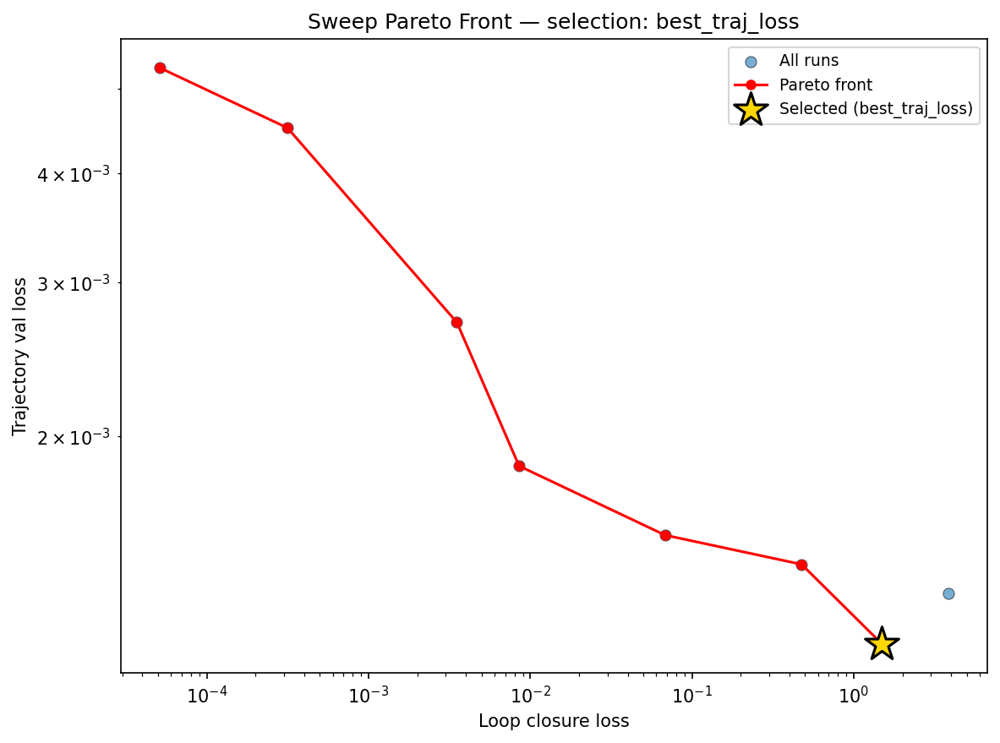
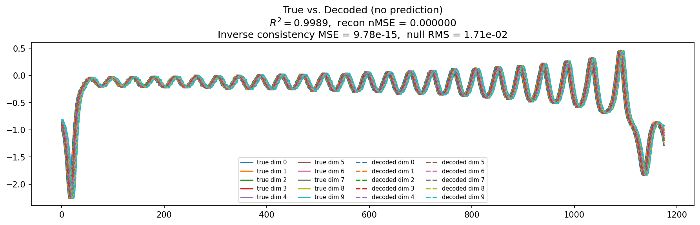
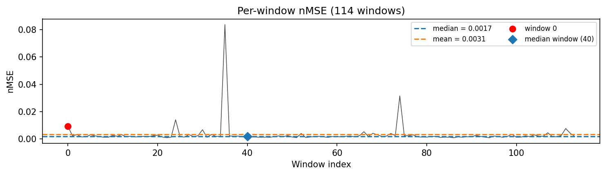
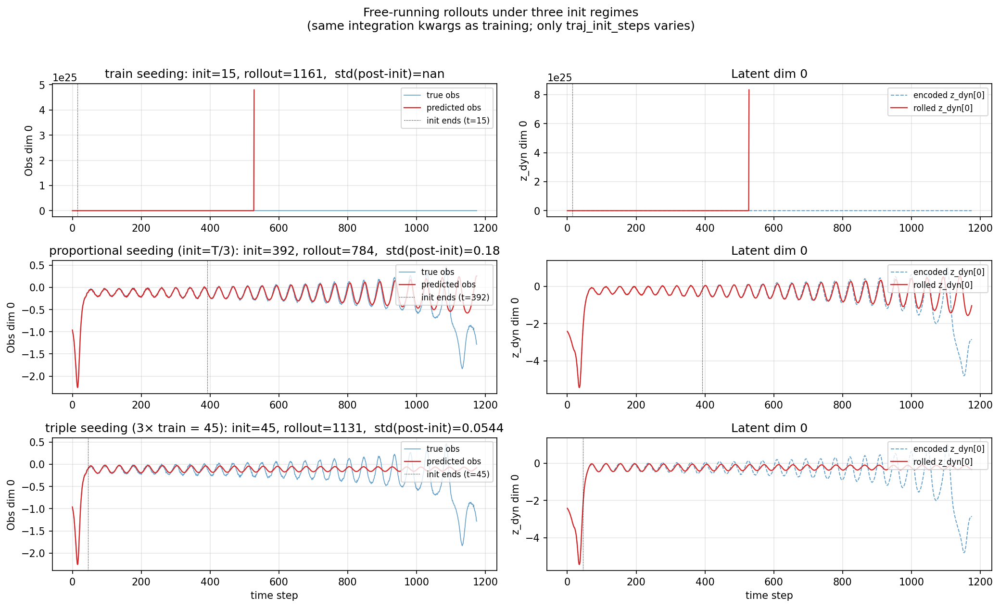
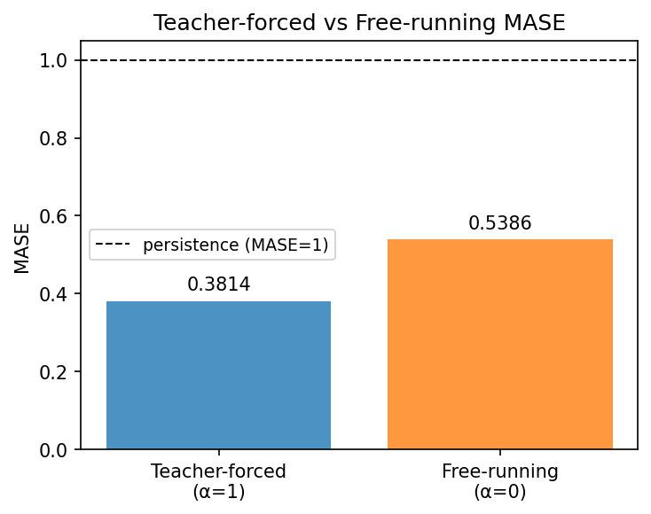
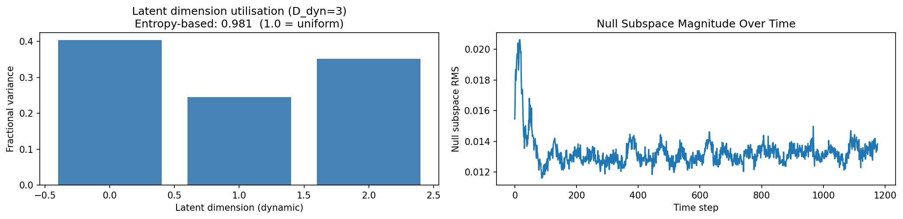
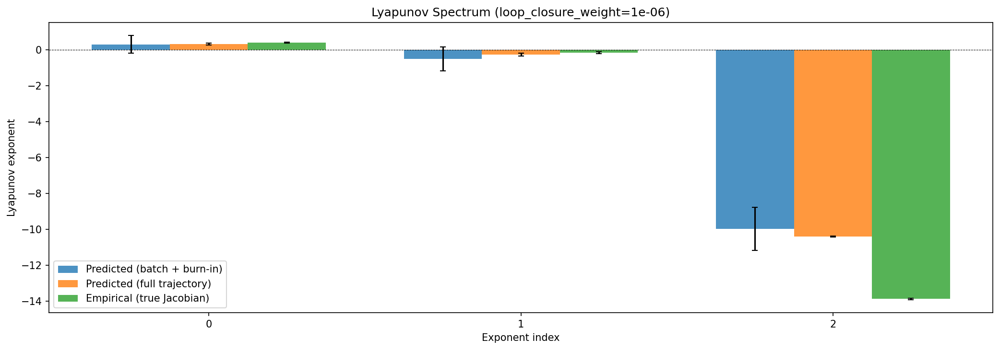
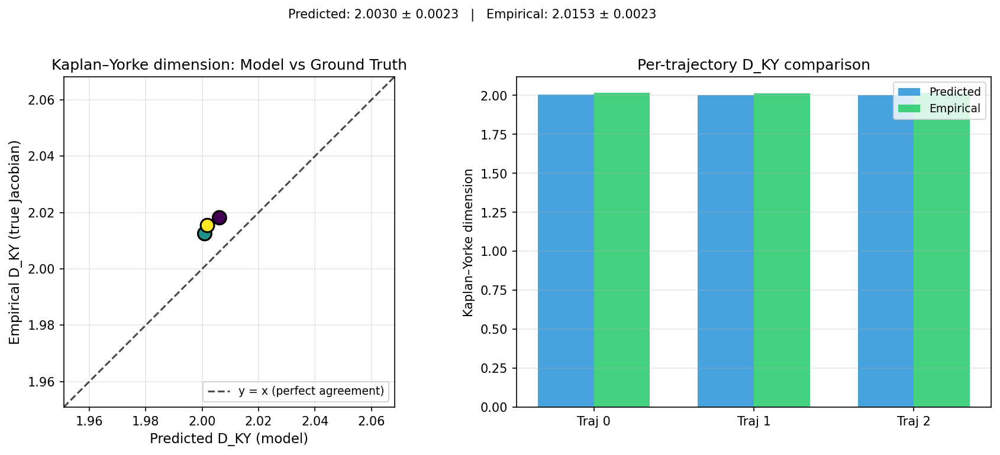
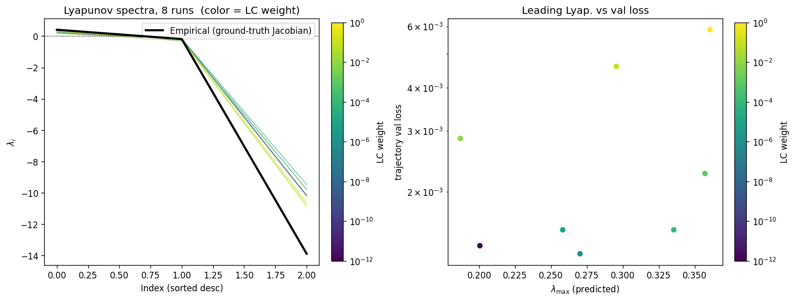
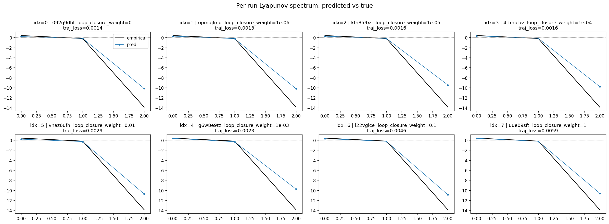
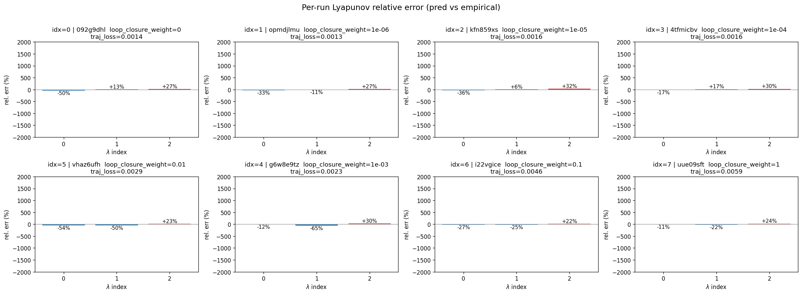
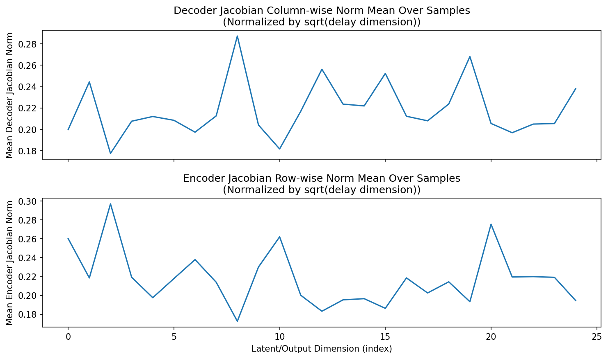
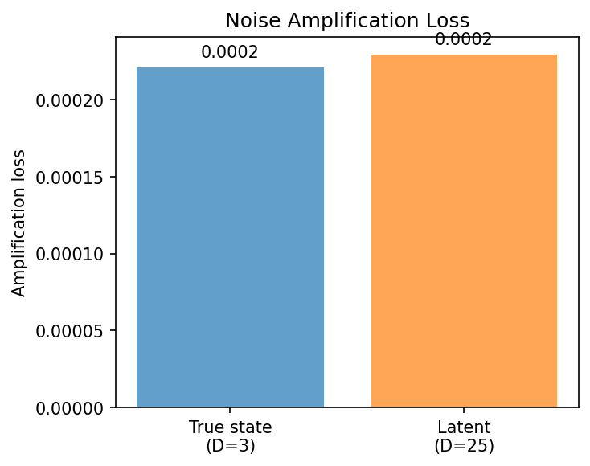
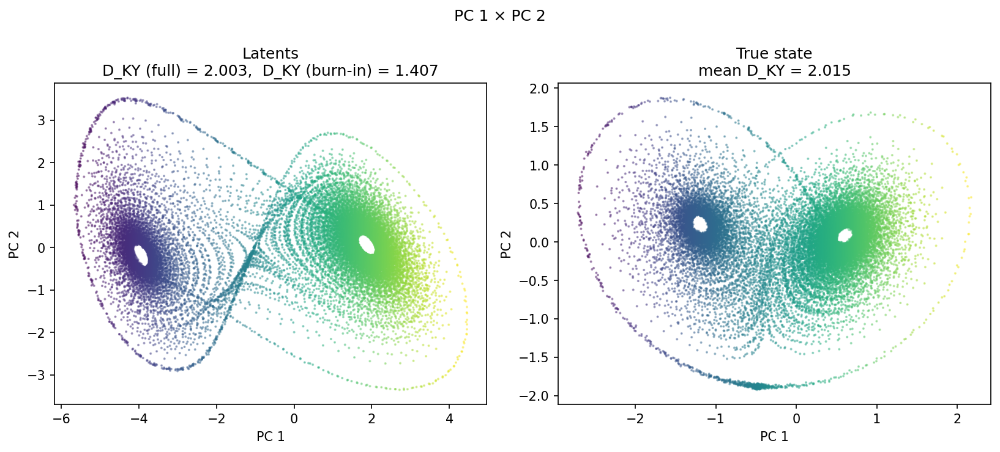
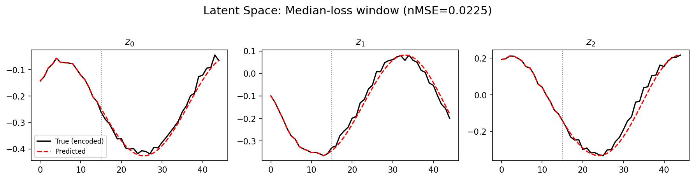
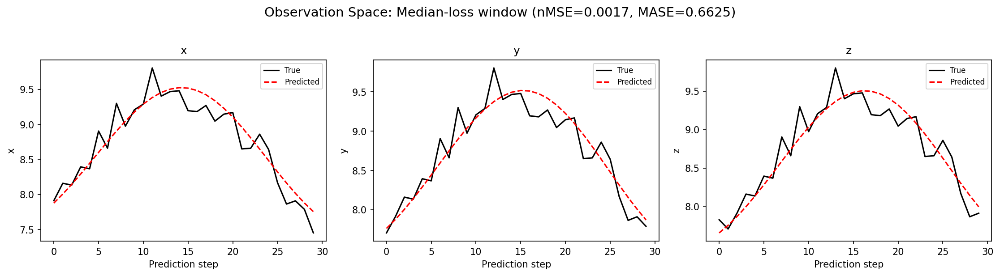
(to be written)
run_analytics stdoutrun_analyticsNo run_id provided — selecting best run from group 'lorenz_partial_25d_additive_mse_uniform_p30_obsnoise001__nolpl_lc_sweep' ...
Found 8 total runs in JacobianODE/Lorenz_INDpartial_N25_D1_NormTrue_T3__JacobianODE (group=lorenz_partial_25d_additive_mse_uniform_p30_obsnoise001__nolpl_lc_sweep)
All runs (state, loop_closure_weight, tangent_entropy_weight, kl_dyn_weight):
092g9dhl: state=finished, lc=0.0, te=0.0, kl_dyn=0.0
opmdjlmu: state=finished, lc=1e-06, te=0.0, kl_dyn=0.0
kfn859xs: state=finished, lc=1e-05, te=0.0, kl_dyn=0.0
4tfmicbv: state=finished, lc=0.0001, te=0.0, kl_dyn=0.0
vhaz6ufh: state=finished, lc=0.01, te=0.0, kl_dyn=0.0
g6w8e9tz: state=finished, lc=0.001, te=0.0, kl_dyn=0.0
i22vgice: state=finished, lc=0.1, te=0.0, kl_dyn=0.0
uue09sft: state=finished, lc=1.0, te=0.0, kl_dyn=0.0
slurm_timeout_min not found in any run config — falling back to 180 min
Including 092g9dhl (lc=0.0): use_all_runs=True (state=finished)
Including opmdjlmu (lc=1e-06): use_all_runs=True (state=finished)
Including kfn859xs (lc=1e-05): use_all_runs=True (state=finished)
Including 4tfmicbv (lc=0.0001): use_all_runs=True (state=finished)
Including vhaz6ufh (lc=0.01): use_all_runs=True (state=finished)
Including g6w8e9tz (lc=0.001): use_all_runs=True (state=finished)
Including i22vgice (lc=0.1): use_all_runs=True (state=finished)
Including uue09sft (lc=1.0): use_all_runs=True (state=finished)
Found 8 effectively-done sweep runs:
loop_closure_weight=0.0, tangent_entropy_weight=0.0, kl_dyn_weight=0.0 -> run_id=092g9dhl
loop_closure_weight=1e-06, tangent_entropy_weight=0.0, kl_dyn_weight=0.0 -> run_id=opmdjlmu
loop_closure_weight=1e-05, tangent_entropy_weight=0.0, kl_dyn_weight=0.0 -> run_id=kfn859xs
loop_closure_weight=0.0001, tangent_entropy_weight=0.0, kl_dyn_weight=0.0 -> run_id=4tfmicbv
loop_closure_weight=0.001, tangent_entropy_weight=0.0, kl_dyn_weight=0.0 -> run_id=g6w8e9tz
loop_closure_weight=0.01, tangent_entropy_weight=0.0, kl_dyn_weight=0.0 -> run_id=vhaz6ufh
loop_closure_weight=0.1, tangent_entropy_weight=0.0, kl_dyn_weight=0.0 -> run_id=i22vgice
loop_closure_weight=1.0, tangent_entropy_weight=0.0, kl_dyn_weight=0.0 -> run_id=uue09sft
n_dims=25, n_latent=25, n_dyn=3, dt=0.0150
run=092g9dhl: DiagnosticMetrics(one_step_mase=0.38112178444862366, loop_closure_loss=3.8279452323913574, fast_eigenvalue_fraction=0.0, trajectory_val_loss=0.001321429735980928) (from cache, n_batches=100)
run=opmdjlmu: DiagnosticMetrics(one_step_mase=0.3756863474845886, loop_closure_loss=1.4935657978057861, fast_eigenvalue_fraction=0.0, trajectory_val_loss=0.001155607053078711) (from cache, n_batches=100)
run=kfn859xs: DiagnosticMetrics(one_step_mase=0.38685932755470276, loop_closure_loss=0.47550055384635925, fast_eigenvalue_fraction=0.0, trajectory_val_loss=0.0014258477604016662) (from cache, n_batches=100)
run=4tfmicbv: DiagnosticMetrics(one_step_mase=0.38457468152046204, loop_closure_loss=0.06815202534198761, fast_eigenvalue_fraction=0.0, trajectory_val_loss=0.0015400759875774384) (from cache, n_batches=100)
run=g6w8e9tz: DiagnosticMetrics(one_step_mase=0.3833397924900055, loop_closure_loss=0.008531534112989902, fast_eigenvalue_fraction=0.0, trajectory_val_loss=0.0018485391046851873) (from cache, n_batches=100)
run=vhaz6ufh: DiagnosticMetrics(one_step_mase=0.39798006415367126, loop_closure_loss=0.003517073579132557, fast_eigenvalue_fraction=0.0, trajectory_val_loss=0.0027007204480469227) (from cache, n_batches=100)
run=i22vgice: DiagnosticMetrics(one_step_mase=0.40811842679977417, loop_closure_loss=0.0003155436716042459, fast_eigenvalue_fraction=0.0, trajectory_val_loss=0.004512681160122156) (from cache, n_batches=100)
run=uue09sft: DiagnosticMetrics(one_step_mase=0.4241741895675659, loop_closure_loss=5.130571298650466e-05, fast_eigenvalue_fraction=0.0, trajectory_val_loss=0.005287426523864269) (from cache, n_batches=100)
Ranking method: best_traj_loss
Best run ID: opmdjlmu
Best loop_closure_weight: 1e-06
Best tangent_entropy_weight: 0.0
Best kl_dyn_weight: 0.0
Best traj loss: 0.001156
Criteria applied: ['C1', 'C2', 'C3']
Surviving: 8 / 8
Auto-selected run_id: opmdjlmu
======================================================================
PARETO FRONTIER RUNS (7 runs)
======================================================================
Run ID LC Loss Traj Val Loss
------------ -------------- --------------
uue09sft 0.000051 0.005287
i22vgice 0.000316 0.004513
vhaz6ufh 0.003517 0.002701
g6w8e9tz 0.008532 0.001849
4tfmicbv 0.068152 0.001540
kfn859xs 0.475501 0.001426
opmdjlmu 1.493566 0.001156 <-- selected
======================================================================
RANKING METHOD COMPARISON (over 8 survivors)
======================================================================
Method Run ID LC Loss Traj Val Loss
---------------------- ------------ -------------- --------------
best_traj_loss opmdjlmu 1.493566 0.001156 <-- active
pareto_knee g6w8e9tz 0.008532 0.001849
geo_rank opmdjlmu 1.493566 0.001156
minimax_rank 4tfmicbv 0.068152 0.001540
geo_log_score opmdjlmu 1.493566 0.001156
minimax_log_score g6w8e9tz 0.008532 0.001849
======================================================================
Loading run opmdjlmu from JacobianODE/Lorenz_INDpartial_N25_D1_NormTrue_T3__JacobianODE ...
Train dataset shape: torch.Size([24882, 45, 25])
Validation dataset shape: torch.Size([7917, 45, 25])
Test dataset shape: torch.Size([3393, 45, 25])
Train trajectories dataset shape: torch.Size([22, 1176, 25])
Validation trajectories dataset shape: torch.Size([7, 1176, 25])
Test trajectories dataset shape: torch.Size([3, 1176, 25])
Loading checkpoint epoch=145-step=29200.ckpt...
Computing reconstruction ...
Computing MASE ...
Teacher-forced MASE: 0.3814
Free-running MASE: 0.5386
Computing latent utilization ...
Entropy-based utilization: 0.981
Null subspace mean RMS: 1.333765e-02
Computing Lyapunov exponents ...
Computing full-trajectory Lyapunov (3 test trajs, T=1176) ...
Predicted Lyapunov exponents (batch+burn-in, 128 windowed trajs):
λ_1 = +0.2900 ± 0.4959
λ_2 = -0.5224 ± 0.6637
λ_3 = -9.9784 ± 1.2028
Predicted Lyapunov exponents (full-length, 3 test trajs):
λ_1 = +0.3077 ± 0.0505
λ_2 = -0.2769 ± 0.0706
λ_3 = -10.4187 ± 0.0270
Empirical Lyapunov exponents (mean ± std):
λ_1 = +0.3846 ± 0.0251
λ_2 = -0.1716 ± 0.0444
λ_3 = -13.8799 ± 0.0398
Mean KY dim (predicted): 2.003 ± 0.002
Mean KY dim (empirical): 2.015 ± 0.002
Mean KY dim (burn-in): 1.407 ± 0.640
Computing prediction windows ...
Windows: 114 — nMSE min=0.0008, median=0.0017, mean=0.0031, max=0.0838
Computing long-trajectory free-running rollouts ...
Computing encoder/decoder Jacobians ...
encoder_jacobian: (128, 25, 25)
decoder_jacobian: (128, 25, 25)
Computing amplification loss ...
Amplification loss — True state: 0.000221
Amplification loss — Latent: 0.000229